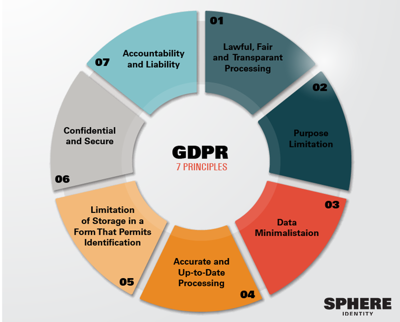

This website was made using Atom as the main text editor, GitHub to host the code and Bootstrap for the base html framework. This website is written in HTML5 and CSS which structure content for the internet ann describe the style/layout of a HTML doc respectively.
These free resources can be found at Atom, GitHub & Bootstrap.
These website creation tools were chosen because they're both new user friendly and able to carry out complex commands. Atom and GitHub syncronise extremely well, and allow for website templates to be easily uploaded. These templates were taken from Bootstrap because they're open source and professional in appearance.
Describe the steps to register and setup a domain name for your website
Quality content is king. Too much detail and it will be boring and frustrating to read. Too little and the user will feel the website is not informative enough. The best way to convey lots of information is to have clear breating spaces and section topics using a navigation bar.
There's nothing more frustrating than a buffering website. For good user experience the pages should load quickly at even low wifi speeds of 1-2 Mbps. Similary, fluid grids and flexible layouts should be incorporated to work quickly when the screen size changes or the website is veiwed on a smartphone.
Simplicity is best for web design. Cluttering the page distracts from they key content and makes the website difficult to navigate for first time users.
Website accessibility is about designing websites so that people from all parts of the disabled community and others such as people in rural areas can use them. As our society becomes more reliant on internet resources this an essential thing to consider to prevent dicrimination be negligence. In many ways the world wide web can be a fantastic tool for promoting equal access and opportunities, but measures must be taken not to exclude those who have different accessibility needs. Some examples of these measures are:
Using the Alt-tag in html for an image means that equivalent text is provided. This allows those who are visually impaired or live in areas with low bandwith to access the information
By making the website able to be navigated without a mouse it makes it accessible to those who have limited motor control.
Screen Readers convert website text into audio, but rely on the default html tags being used for their intended purpose. So using the default settings is not only easier, but makes the website more accesible.
GDPR stands for General Data Protection Rules, and regulates how personal data is collected and processed. It has 7 key principles:
Image from Medium Sphere Identity.
This website accounts for GDPR in a few ways, firstly it does not collect unnescessary data from thoe that visit it (nobody likes the wrong type of cookies). Secondly we only store the details of those who fill in the contact us form for a limited period of time. Finally, we ask for permission to continuing using any individuals images and contact details that are on the website on an opt-in annual basis.
The key steps we would take to market this website in future would be Search Engine Optimisation (SEO), Social Media advertising and regular blogging
SEO is a tough competition, so lots of research on the best way to do it is required. Embedding key words and phrases throughout should partly help this, as well as adding alt tags to images, which has the benefit of making the websit more accesible.
Social Media can offer a huge boost to how many people visit a site, with the average facebook user having over 300 friends just a few people sharing the website means a massive target audience can be reached. However care should be taken to make advertisements attractive first.
Regular blogging on the website with updates of how the project prototyping is developing can improve the websites search engine ranking, as well as providing a great history of the products development
As the prototype continues to develop into a complete product this website would be vital for taking it to market. Keeping track of the development history and regular updates via the aforementioned blogging method.
Links to popular start up funding websites such as kickstarter could be included when the product is ready for that stage, so that people interested could invest in its development. The website could even evolve into a platform by which individual units could be purchased if supply lines were fully developed.